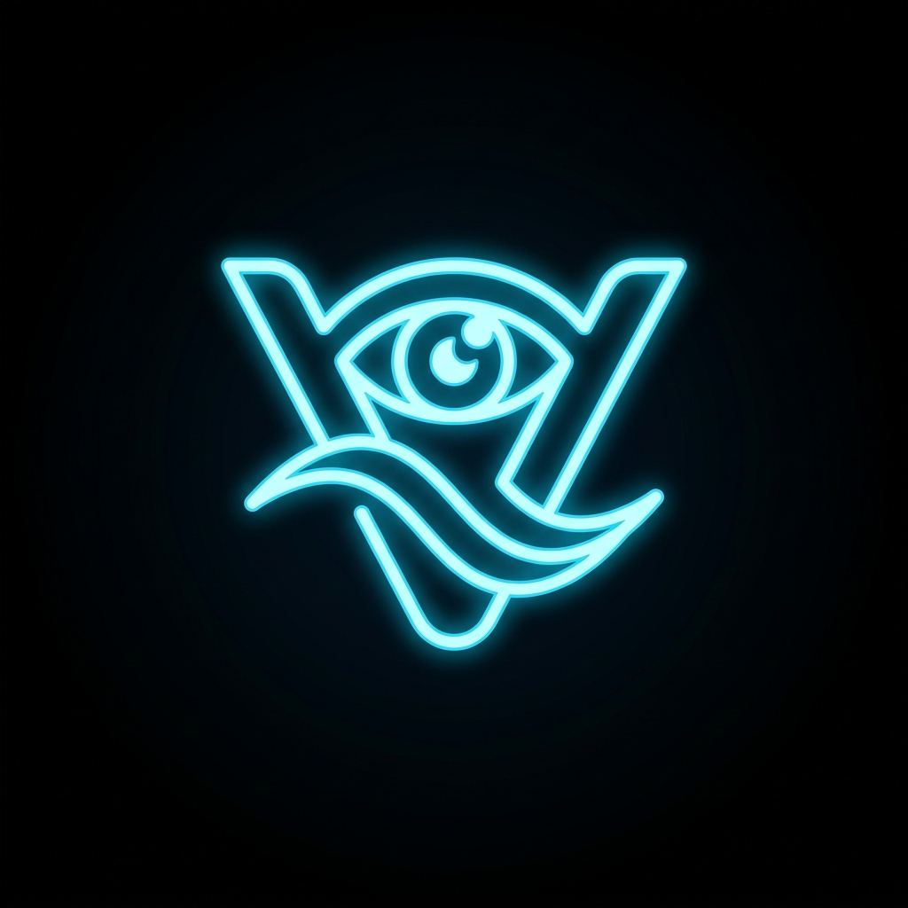

Live Tracking

Câmera Off
Mão não detectada
Selecione o Ambiente
Mova sua mão para guiar o cursor. Faça o gesto de pinça para acessar os módulos interativos do totem.
fastfood
Fast Food
Autoatendimento Premium
shopping_cart
Mercado
Self-checkout Rápido
local_hospital
Hospital
Triagem e Agendamento
school
Universidade
Diretório e Mapa
3d_rotation
Configurator 3D
Visualização Interativa de Produtos